Six hundred years of stars
The people who advanced this subject include a Florentine painter credited with a Venetian pavement inlay, an imperial astronomer who conducted his mother's defense against a witchcraft charge, a Saxon schoolmaster whose collection ran to hundreds of paper models and who later donated more than two hundred of them, and a Worcester schoolteacher who withdrew from a landmark book over its prose. What follows is a chronological spine, with a few thematic excursions and the solids live: every interactive figure opens on the solid its section describes, each can be turned, and most can be taken apart shell by shell in the Cells table beside it.
A floor in Venice
St Mark's Basilica · attributed to Paolo Uccello
Set into the marble pavement of the Basilica di San Marco is a small inlay panel showing a spiky twelve-pointed solid in perspective. It represents a small stellated dodecahedron. If the usual fifteenth-century dating is right, it predates Kepler's 1619 mathematical treatment by nearly two centuries. The basilica's medieval marble pavement is older than the usual date assigned to the panel, so on that dating the panel would be a later insertion.
The attribution to Paolo Uccello is modern and stylistic. No contract, payment record or contemporary mention has been identified in the sources checked. The attribution traces to Michelangelo Muraro's contribution to the proceedings of the 1955 international art-history congress in Venice, published in 1956. Treccani reports it as the most probable attribution rather than as fact, while George Hart found no documentation for either the attribution or the date.
The dates in circulation cannot all be right. About 1430 is often repeated; Uccello's documented Venetian period ran from 1425 to 1430 or early 1431; and at least one modern history gives 1420, which is incompatible with his authorship because he did not leave for Venice until after August 1425. The panel itself demonstrates sophisticated perspectival design translated into stone inlay.
The solid in the pavement, built from the dodecahedron: one shell outward. Seen down a five-fold axis its pentagram of triangular facets closely resembles the outline cut into the pavement.
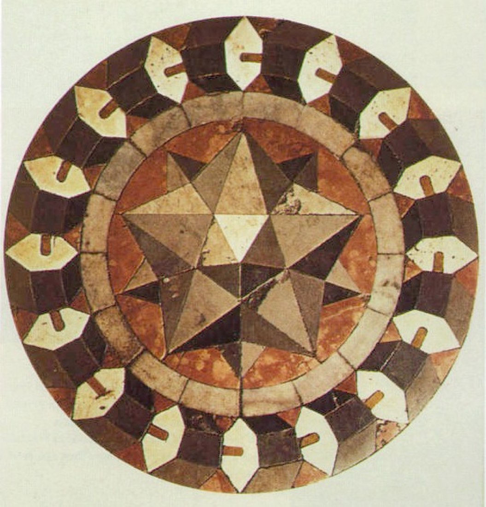
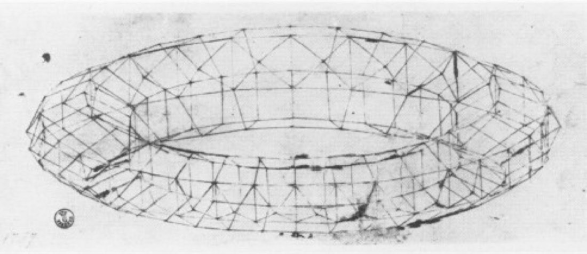
Almost everything colorful about Uccello comes from Vasari. Vasari's first edition appeared in 1550, seventy-five years after Uccello's death; its vivid anecdotes are not contemporary evidence. He portrays Uccello as so absorbed in perspective that he worked through the night and neglected everything else, and reports Donatello telling him that such studies would be useful only to makers of intarsia. Intarsia workshops were among the important settings in which perspectival polyhedra appeared, and the San Marco panel itself is stone inlay rather than painting.
The documented hardship is separate from Vasari. In his Florentine tax declaration of August 1469 Uccello wrote that he was old, without work and unable to practice, and that his wife was ill; Treccani notes that this may have been an effort to reduce his tax assessment. A 1474 lawsuit over payment for two panels sold after 1469 shows that he continued working after the declaration. His daughter Antonia became a Carmelite nun and was recorded in the Florentine death register as pittoressa, “woman painter.” No work can be securely attributed to her.
Pacioli's elevations, drawn by Leonardo
Luca Pacioli, De divina proportione · illustrations by Leonardo da Vinci
Pacioli composed De divina proportione at Milan in 1497–98; it was printed in Venice in 1509. It contains 59 full-page woodcuts after drawings Leonardo made in 1497, including a family of "elevated" solids — elevatus — with a pyramid raised on every face. These are important precursors to later stellation theory, and the difference between the two operations is worth stating precisely, because the program on this site implements one of them and not the other.
In Pacioli's construction, elevation glues a pyramid of equilateral triangles onto each face. It therefore invents new face planes, and it only works where the faces are triangles, squares or pentagons — a regular hexagon's pyramid would be flat, which is why the three Archimedean solids in the book with hexagonal faces get no elevated version. Kepler's stellation, a century later, extends the faces a solid already has, within the planes it already has. No new face planes are introduced.
The consequence is that two objects which look identical from outside can be entirely different on paper. Pacioli's octocedron elevatus is eight three-triangle pyramids plus the eight faces of the octahedron underneath, which the reader must supply, as he puts it, with the imagination: thirty-two triangles. Kepler's stellated octahedron has eight faces — the original eight, extended, and passing through one another. The contrast is especially visible in the dodecahedron and the icosahedron: Pacioli's icosaedron elevatum is a non-convex, equilateral-faced relative of the triakis icosahedron, and reaching the first stellation of the icosahedron means pushing those apexes further out, to the height at which the new triangles fall into the original face planes.
The images after Leonardo's drawings also provide the first known examples of the open vacuus idiom — solids drawn as struts, so the far side shows through — a visual technique later artists and model makers continued to use.
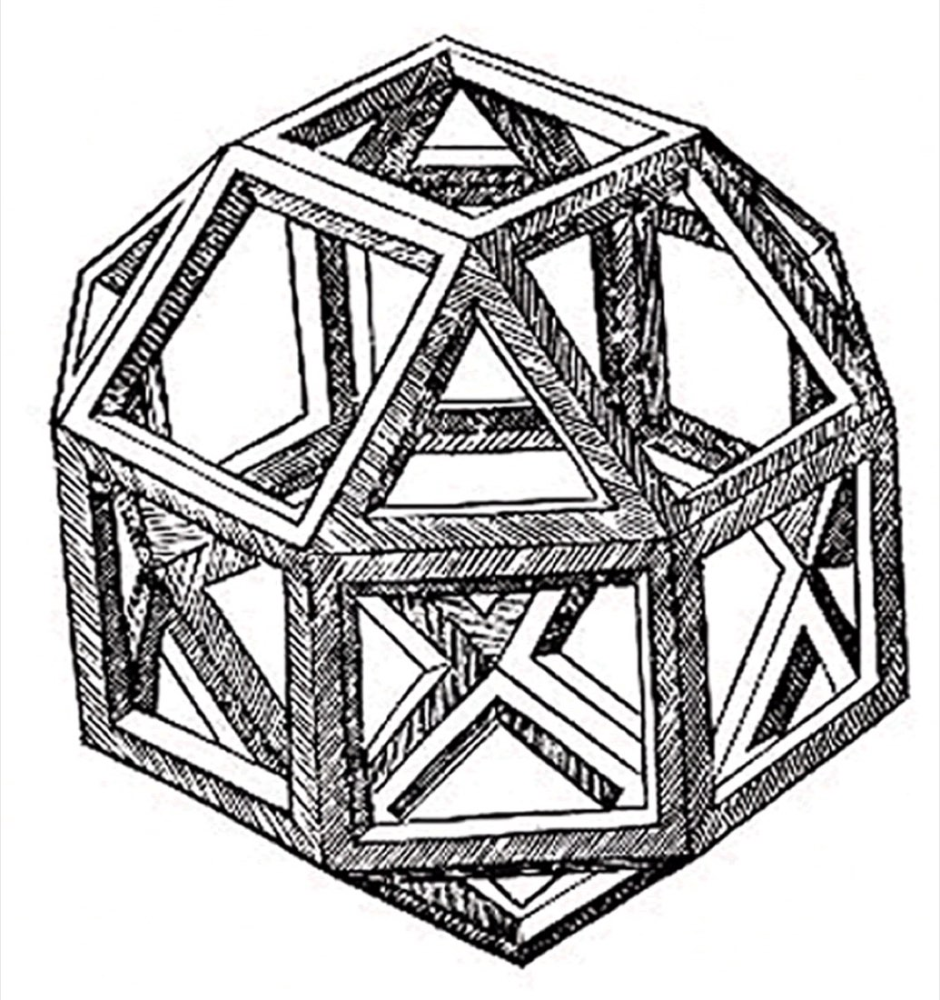
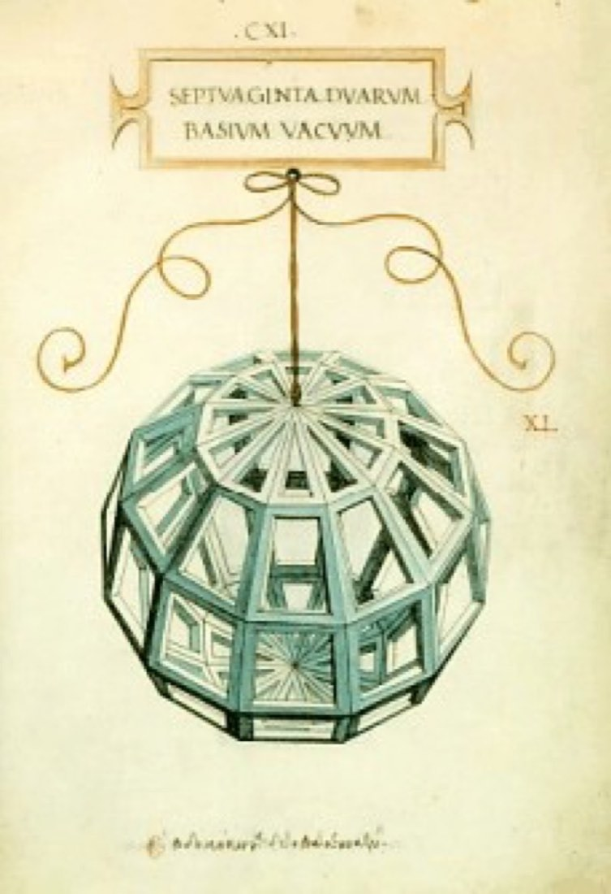
Kepler on a snowflake
Johannes Kepler, Strena seu de nive sexangula
Kepler was Imperial Mathematician in Prague, but his salary was badly in arrears because the cash-strapped imperial exchequer often failed to pay. Framing the tract as a New Year's gift for his friend and patron Johann Matthäus Wacker von Wackenfels, he asked why snowflakes are six-cornered. The short book considers honeycomb cells, plane tilings, pomegranate seeds compressed into rhombic dodecahedral cells, equal-sphere packing and the stacking of cannonballs. It is often treated as a foundational work of structural crystallography.
The octahedron makes a natural first exercise, because it is the one Platonic solid with exactly one stellation: extend its eight faces until they close again and the result is the stella octangula, two interpenetrating tetrahedra whose eight points are the corners of a cube. There is only one decision to make.
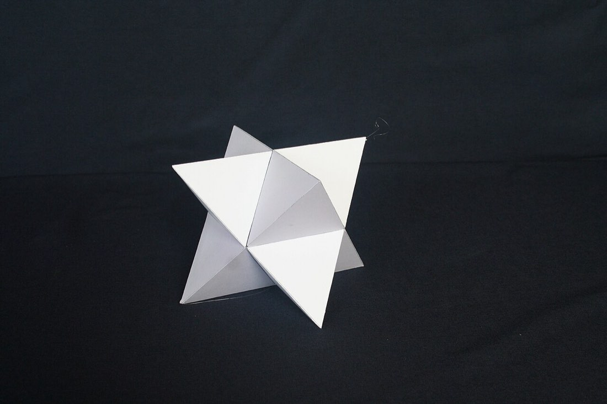
The octahedron's only stellation, and the whole subject in its simplest instance: two layers, one decision.
Two stars in the Harmony of the World
Johannes Kepler, Harmonices Mundi, Book II · Linz
In 1619 Kepler gave the first explicit definition conventionally cited in histories of polyhedral stellation: extend a figure's edges or faces until they meet again. He developed the idea first for planar figures, where a pentagon yields a pentagram, and then in three dimensions, producing the small stellated dodecahedron and the great stellated dodecahedron.
The decisive step was not finding the shapes, which had been drawn before, but recognizing that they are regular: their faces are regular star pentagons, identically arranged at every vertex. The ancient list of five regular solids was therefore incomplete. Kepler reached his solids by extending edges, and arrived at the great stellated dodecahedron by working outward from an icosahedron; in the modern face-plane classification that this program uses, both of his solids are stellations of the dodecahedron.
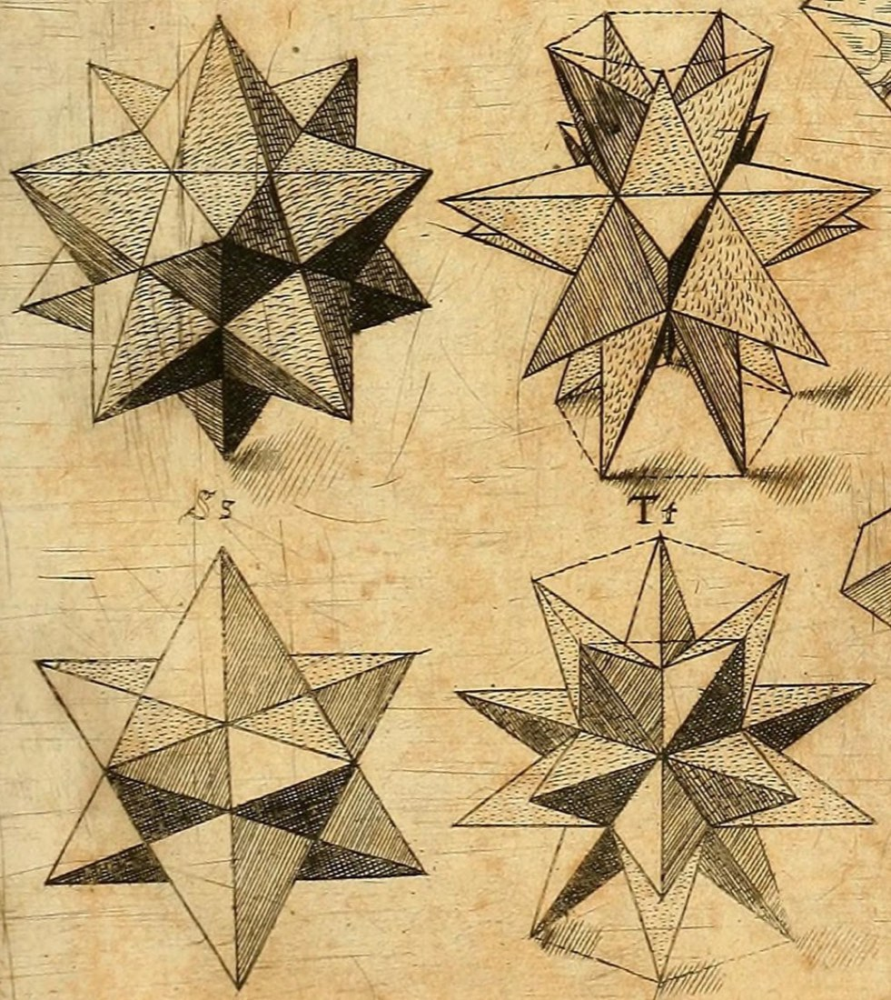

{0,1} · Kepler, 1619{0,1,2} · Poinsot, 1809{0,1,2,3} · Kepler, 1619The dodecahedron has three non-trivial stellations in the conventional sequence, and all three are famous, so walking outward one shell at a time passes through three of the four Kepler–Poinsot solids in order. Note that the engraving above shows only the first and third of the three below: the great dodecahedron in the middle is not in Kepler's plate because Kepler did not report it. Poinsot gave it a mathematical treatment in 1809, although Jamnitzer had pictured a similar form in 1568.
The circumstances. The star polyhedra appear in Book II, on the congruence of regular figures; Book V contains the third law of planetary motion. In Book V Kepler says the idea first occurred to him on 8 March 1618, that a faulty calculation led him to reject it, and that it returned on 15 May. The book was completed in 1618, as the Thirty Years' War began, and published at Linz in 1619.
Katharina Kepler. In December 1615 Kepler received a letter reporting that his mother had been accused of witchcraft at Leonberg. He prepared lengthy, point-by-point legal submissions on her behalf. Katharina stayed with him in Linz from January to September 1617 after traveling roughly three hundred miles, partly on foot and partly by boat down the Danube. These events overlapped his work on Harmonices Mundi. Proceedings opened in Leonberg town hall on 9 November 1619, the year the book appeared. She was arrested in August 1620 and held for about fourteen months, while Kepler bore substantial costs of her detention and defense. On 28 September 1621 she was shown the instruments of torture in an attempt to frighten her into confessing, but she still refused. She was acquitted by a ruling of 4 October and released within days. She died on 13 April 1622, aged seventy-four. The case cost Kepler more than nine hundred guilders — over two years of his salary.
Poinsot finds the other two
Louis Poinsot, "Mémoire sur les polygones et les polyèdres"
Two centuries after Kepler, and apparently without knowing that Kepler had been there for the other two, Poinsot described the great dodecahedron and the great icosahedron. His route in was star polygons: he built a general theory of the pentagram, heptagram and their relatives, then asked the three-dimensional question. Kepler's two solids have pentagram faces; Poinsot's additional two instead have pentagram vertex figures.
The great icosahedron is the only one of the four that is a stellation of the icosahedron rather than the dodecahedron. Its twelve spikes reach φ³ ≈ 4.236 times the core's circumradius, and it takes seven of the icosahedron's eight shells.
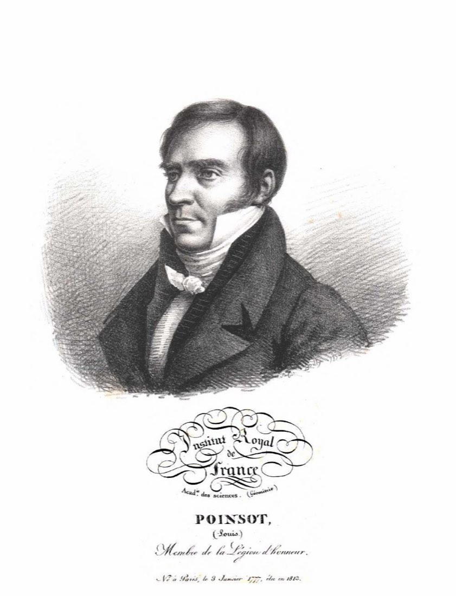
Seven shells of the icosahedron's eight. The eighth would add the outermost cells and give the final stellation instead.
Poinsot sat the École Polytechnique's entrance examination in October 1794, having failed the algebra section of it. He trained as a civil engineer and decided against it. When he wrote the memoir that added two solids to Euclid's list he was a schoolmaster, teaching mathematics at the Lycée Bonaparte. From 1816 to 1826 he was the École Polytechnique's admissions examiner — the man deciding who got in.
He published very little, and deliberately: he would release only fully worked-out results, and he was a geometer among analysts at the moment when analysis was winning. A vivid surviving glimpse of him in a room is from the journal of the English mathematician Thomas Archer Hirst, who visited in December 1857 and described a tall, thin man with silver hair in a loose dressing gown, talking continuously and well in a low voice and never straying from the point. Hirst guessed his age at between sixty and seventy. Poinsot was eighty — a fortnight short of eighty-one.
Cauchy closed the list. Read to the Institut de France in February 1811, when he was twenty-one, and printed in 1813, Cauchy's "Recherches sur les polyèdres" proved that a regular star polyhedron can only be built by extending the edges or faces of a convex regular one. Five convex solids yield exactly Poinsot's four, so the list of nine regular polyhedra is complete. He cites Poinsot extensively and never mentions Kepler. He worked on the mathematics despite a heavy engineering workload at Cherbourg, building harbor works for the fleet intended to invade England. The same 1813 cahier contains his first combinatorial-topological proof of Euler's polyhedron formula in Part II of the first memoir, and his rigidity theorem in a separate second memoir. In 1813, the year the proofs appeared, Cauchy stood for Lagrange's vacant seat at the Académie and lost it — to Poinsot.
Hess, and the compounds
Edmund Hess, Marburg
Hess began as an experimental physicist — his 1866 Marburg dissertation was on the outflow of air through narrow openings. Although he also studied at Heidelberg, he earned his doctorate and spent his academic career in his native Marburg. In an 1876 paper for the Marburg natural-science society he worked from stellation diagrams, the flat radiating pattern a single face plane makes when cut by all the others, and by that means completed the main sequence of icosahedral stellations. He also described the interpenetrating compounds: five octahedra, five tetrahedra and ten tetrahedra, which are stellations of the icosahedron, and five cubes, which is a stellation of the rhombic triacontahedron.
Brückner's §153 cites Hess's 1876 paper for these constructions. A later historical timeline by Guy Inchbald notes that Cauchy was already aware in 1812 of the five- and ten-tetrahedra and five-octahedra compounds. The year 1876 is therefore Hess's publication and systematic-description date, not necessarily the first notice of every compound.
The compound of five octahedra is instructive to build, because it invites a specific mistake. Its thirty outer points sit at the vertices of an icosidodecahedron, so it is tempting to take the shell that produces them and stop. That gives the correct silhouette and a hollow interior. The compound needs the shell underneath as well.
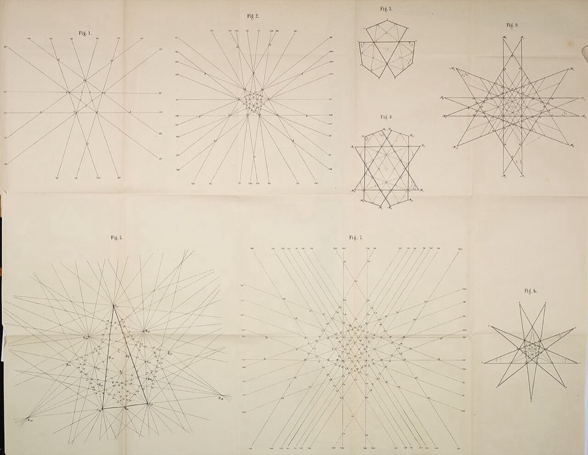
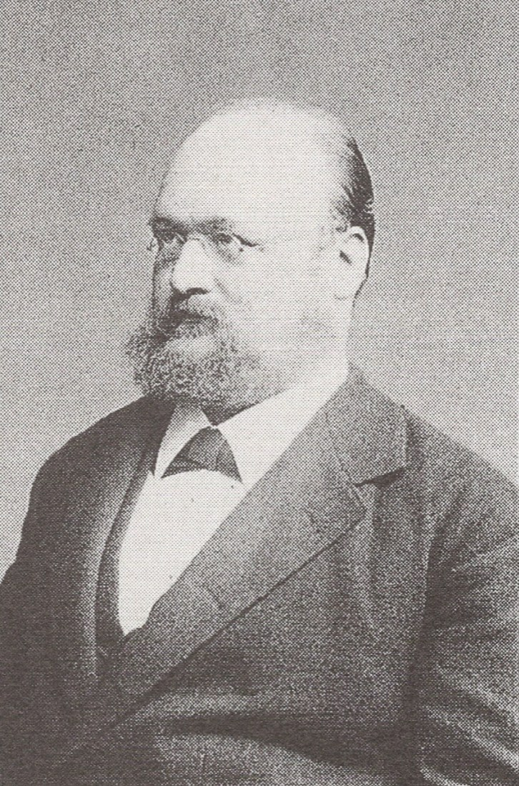
Brückner's room full of paper
Max Brückner, Vielecke und Vielflache: Theorie und Geschichte · B. G. Teubner, Leipzig
Johannes Max Brückner (1860–1934) took his doctorate at Leipzig in 1886 under Felix Klein, with a dissertation on conformal mapping that had nothing to do with polyhedra, and then went to teach school. He taught at the Realgymnasium in Zwickau from 1887 and at the Gymnasium in Bautzen from 1897 until he retired in 1924. He never held a university post, and the title page of his book says so: Dr. Max Brückner, Oberlehrer am Gymnasium zu Bautzen.
Vielecke und Vielflache is around 220 pages of dense classical geometry with many figures in the text, seven lithographed plates of nets and diagrams, and five collotype double-plates. Because each collotype plate is a double leaf, the photographs run across ten sheets, and they show 146 paper models from Brückner's collection. Collotype is a continuous-tone photographic process with no halftone screen, which is why the plates have their soft, almost sculptural gray. George Hart argues that it was the first major work to use photographs to communicate the visual appeal of mathematics — and that the photographs, more than the classification, explain the book's afterlife.
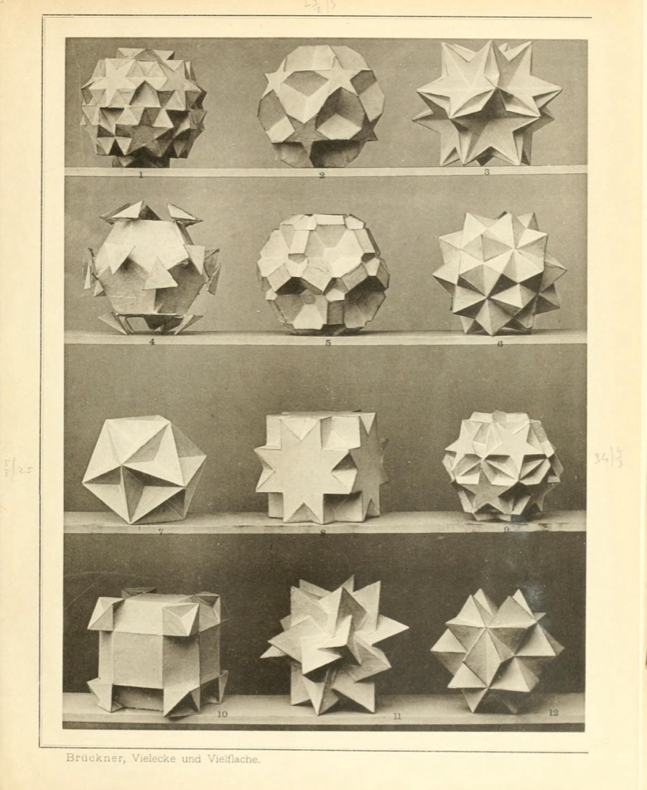
The final stellation of the icosahedron — every cell taken — photographed by Brückner as Plate XI, no. 14. The nickname "echidnahedron", after the spiny mammal, is modern: Netlib database developer Andrew Hume coined it in 1995.
Section 153 of the book is titled Die vollständige Figur der Ebenen des Ikosaeders — the complete figure of the planes of the icosahedron. Brückner takes one face plane, intersects it with all the others, and numbers the resulting points by the concentric ring they lie on. That is the stellation diagram, in the panel on the right of the figure above. It uses the same complete plane-intersection construction later used in The Fifty-Nine Icosahedra and in this program. He reads the compounds straight off it: the points numbered 3 give the compound of five octahedra, the points numbered 6 give the two mirror-image compounds of five tetrahedra and, taken together, the compound of ten tetrahedra. He credits the method to Hess.
What was new was less the theory than the realization. Brückner states plainly that a large part of the polyhedra on the plates were built for the first time by him, and the book shows ten stellations of the icosahedron including the final one. Several of the compounds, however, had appeared in Hess's work — Hess included five cubes, five octahedra, five tetrahedra and ten tetrahedra in 1876 — and Brückner's contribution to those is the systematic derivation, the model and the photograph.
The plates are a photographic compromise, and he says so. A footnote on p. 183 explains that his isogonal models were painted in oil colors, with faces of equal edge-count sharing a color so the configuration could be read at a glance — a convention he took from models Hess exhibited at the Munich mathematical exhibition of 1893. Colored models photographed badly for collotype, so every one of those had to be painted over white, and to kill the shine the white went on as a coat of levigated chalk. Once chalked, the surface would no longer hold drawn edge lines. The uniform ghostly matte white of the famous plates is therefore a photographic workaround: the isogonal models had been color-coded, and those photographed for the book were whitewashed for the camera.
The same footnote notes that the models are arranged on the plates by size rather than by any logic — apart from a rough split keeping the isohedral models off the isogonal ones' plates — because anything else would have wasted plate space, and apologises for the flipping back and forth this forces on the reader. It also records that some of the polyhedra described in the text are not pictured at all, because they were too complicated and because the author had finally run out of the thing he needed most — patience.
The preface thanks Hess for readily lending models from his own collection to copy, thanks the Dresden firm of Römmler & Jonas for the photography, and invites the reader to come and see the collection: it is in his possession, and interested parties may view it at any time.
What happened to them. He kept building — his 1906 monograph adds nine more photographic plates showing 110 models — and in 1930–31, when he was about seventy and had been retired for six years, he gave over two hundred models to the Mathematical Institute at Heidelberg, which awarded him an honorary doctorate in 1931. The later trail is poorly documented. Hart reports that the university has no record of their fate; he notes that they survived the First World War and thinks it hard to imagine them surviving the Second, and the German literature on model collections reports the Heidelberg holdings as lost. No original Brückner model was known to survive in the sources consulted. What does survive, in the Heidelberg university library, is Die Polyeder. Ein Tafelwerk — eighteen manuscript volumes delivered in December 1931 and June 1933.
The contrast is with two contemporaries. Alicia Boole Stott's paper models of sections of four-dimensional polytopes, made around the same date, survive in collections at Cambridge and Groningen. H. T. Flather's card set of all fifty-nine icosahedra passed to Cambridge and was photographed for the 1999 edition. Brückner's are reported to have been cleared out.
A schoolteacher in Worcester
Albert Harry Wheeler (1873–1950) · International Congress of Mathematicians, Toronto
Wheeler taught high school in Worcester, Massachusetts for most of his working life, wrote two school algebra textbooks, and built models by the hundred. He had left Clark University without a degree in 1899; he went back at forty-seven and finished the master's in 1921. Three years later he was an invited speaker at the International Congress of Mathematicians in Toronto.
What he presented there was a method: select symmetric sets of regions — his “elements” — in a face plane and show how copies can be assembled into polyhedra, generating figures systematically rather than finding them one at a time. He listed twenty-two entries, or twenty when two mirror-image pairs are each counted only once. That systematic region-selection idea has a modern analog in this program, and Wheeler's version was more permissive than the rules that later became standard. He admitted hollow polyhedra and disconnected constructions; two of the awkward cases that Coxeter's team would wrestle with, f₂ and g₁, appear as Wheeler's numbers 21 and 22.
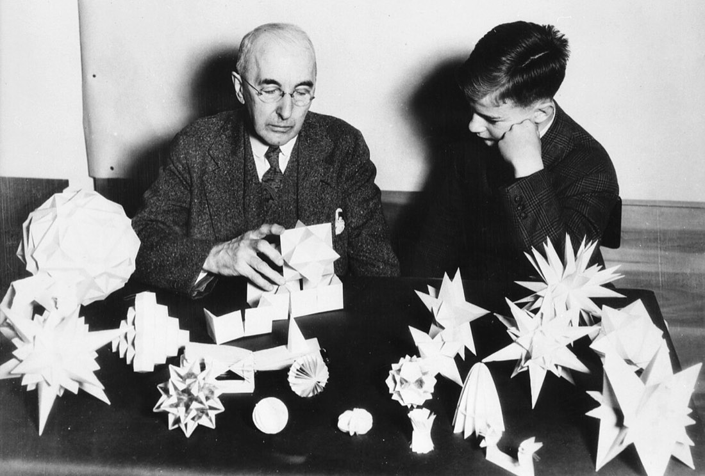
The withdrawal. Wheeler was to have been a co-author of The Fifty-Nine Icosahedra. He pulled out, objecting to Coxeter's exposition; David Roberts, working from Wheeler's papers, quotes him calling it involved and clumsy and complaining that Coxeter tied a subject into knots. Wheeler is off the title page — Flather is on it — but he is still there in the text and the tables. One of his models, no. 370, dated in pencil 26 April 1919, is the solid Coxeter would call De₁ — the seventh stellation, Plate VIII of the 1938 book. Wheeler made it nineteen years before the book appeared.
The models. They are workshop objects, not fragile abstractions: serial numbered, usually dated in pencil on a face, cut from paper — often tan, often combined with transparent green celluloid so the interior shows through — and sometimes held together entirely by hinged folds with no glue. The Smithsonian catalogs more than a thousand model records under Wheeler's name. Among them is a deltahedron 25.5 cm across, the third stellation of the icosahedron, folded without glue in June 1927 by Wheeler and his students, on which fifteen of the sixty faces carry photographs of his pupils at North High School, Worcester. Two more faces are inscribed with boys' names.
He also held six patents, on subjects well outside geometry: a blower for peas, playing cards, a door, a puzzle, a mathematical model, and a blank for forming hollow polyhedrons. The Smithsonian's own curatorial note puts the tension of his career exactly: research mathematicians admired his ingenuity and classed him as an amateur, while the ordinary people who saw his models and heard him speak simply called him a mathematician.
The Fifty-Nine Icosahedra
H. S. M. Coxeter, P. Du Val, H. T. Flather, J. F. Petrie · University of Toronto Press
Twenty-six pages and twenty plates, in paper covers at four shillings and sixpence, and the standard 1938 enumeration under Miller's rules. The division of labor is worth knowing, because each part of it survives in the program:
- Coxeter did the enumeration, using a graph to organize compatible sets of regions in a face plane — analogous to, though not identical with, the support relation that shift-click uses here.
- Du Val invented the cell notation: shells a–h, subscripts for the distinct shapes within a shell, roman versus italic for the two hands of a chiral one. That is the Cells table, three columns and all.
- Flather made the models — all fifty-nine, in card, in miniature.
- Petrie drew the plates: the perspective views on the left of each, which Du Val's later preface calls extremely difficult drawings.
- J. C. P. Miller supplied the five rules that fix the number at 59, and was not an author at all.
Miller's rules require the faces to lie in the twenty face planes; the parts in each plane to be identical, though they may be disconnected; those parts to have trigonal symmetry, with or without reflection; every part to be accessible from outside; and no figure to be admitted whose parts fall into two sets each as symmetric as the whole — except for an enantiomorphous pair with no common part, which happens exactly once. The most human sentence in the book is inside the parenthesis of the fourth rule: for some of these solids, exploring the outside would require a model of enormous size and a crawling insect.
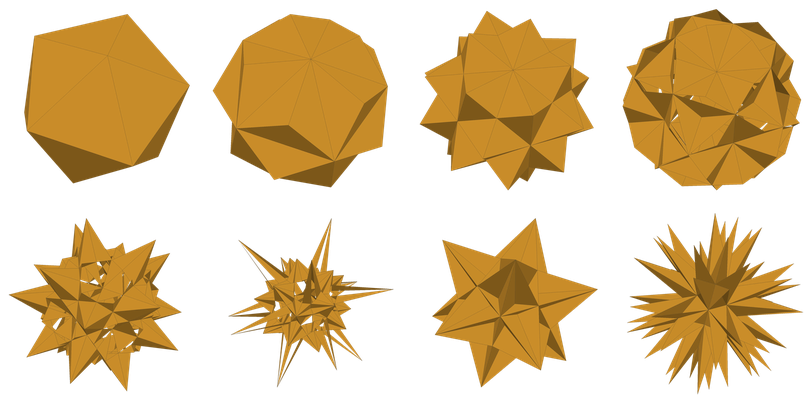
Flather is nearly invisible. Du Val said he was not a professional mathematician, while Coxeter called him a crystallographer. He had made stellated icosahedra before meeting Coxeter and completed the whole set of fifty-nine in card; Du Val says he died about 1950. His first names and exact vital dates remain elusive in the sources consulted. The models passed to the Cambridge mathematics department and were photographed for the third edition.
Petrie was the son of the Egyptologist Flinders Petrie and, by Coxeter's repeated testimony, could answer questions about complicated four-dimensional figures by visualizing them. He read for his degree at UCL, was captured as an officer in the Second World War and organized a choir in the prison camp, and later taught children who had not been doing well in school. He died in a road accident in 1972. Petrie polygons are named after him.
Du Val has a second and larger fame: the Du Val singularities of algebraic geometry — the ADE surface singularities — carry his name. The notation's author is also the namesake of a fundamental object in a field with no obvious connection to it.
The original was reprinted by Toronto in 1951, followed by a Springer edition in 1982 with a new preface by Du Val and a third edition from Tarquin in 1999, reset and redrawn by Kate and David Crennell, who introduced a 1–59 index numbering.
Du Val's Ef₁, one hand of it: the compound of five tetrahedra, Crennell no. 47. One of only two chiral stellations that are fully supported, it is also a familiar paper model — and the figure Brückner photographed as Plate IX, no. 11.
For how to read this table in detail, see the Cells walkthrough.
Escher, working from the plates
M. C. Escher
Escher used star polyhedra and compounds repeatedly: Stars (1948), with two chameleons inside an open cage that is a compound of three octahedra; Order and Chaos (1950) and Gravitation (1952), both built on the small stellated dodecahedron — the second perforated, with twelve creatures originally conceived as turtles, their shells replaced by the polyhedron; Waterfall (1961), whose two towers are capped by a compound of three cubes and by the triangular-faced outer hull of the first stellation of the rhombic dodecahedron.
He was not inventing these shapes, and the dependence on Brückner is documented rather than inferred. Escher made a colored-pencil drawing of the compound of five tetrahedra and annotated it, in his own hand, Brückner, Table IX, no. 11. He made a second, of the compound of three cubes, annotated Table IX, no. 23. Hart's further observation is that the drawings are not traced: the five-tetrahedra drawing has the same handedness as the photograph but is drawn from a different viewpoint, centered on a vertex, and colored in five colors to make the components legible, which the black-and-white plate does not. He had understood the structure well enough to redraw it from a new angle, working from his own cardboard model. That model survives, with leaf-curves pencilled onto five of its faces: it is the design study for the 1958 maple carving Polyhedron with Flowers. Who first put the book in his hands is not documented; his geologist half-brother Berend, who supplied him with technical references and published a crystallography textbook in 1935, is the usual and plausible guess.

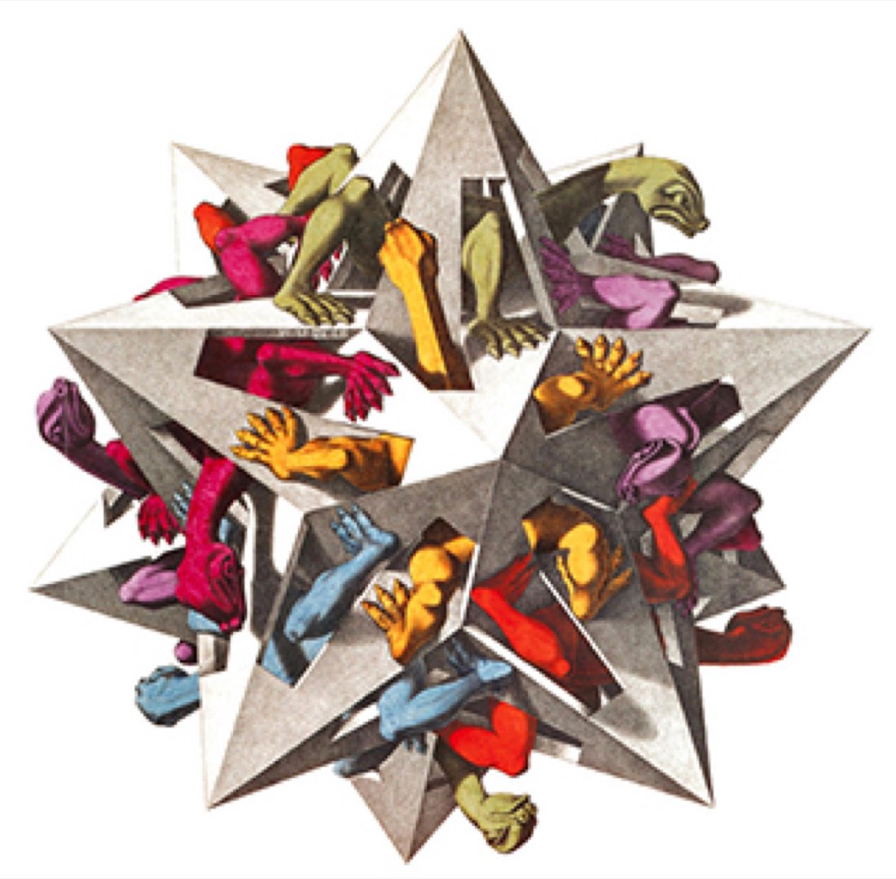
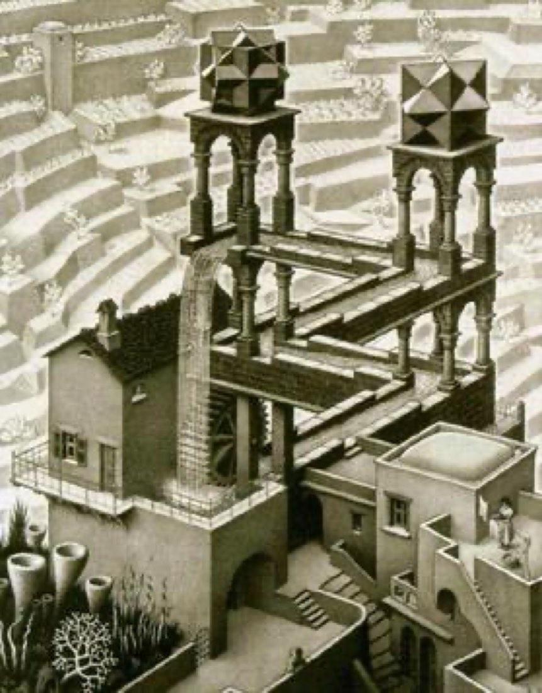
The first stellation of the rhombic dodecahedron. Its triangular outer hull is the solid on the right-hand tower of Waterfall, often called Escher's solid; the stellation itself has twelve self-intersecting hexagonal faces. Brückner photographed the corresponding form as Plate X, no. 13.
Nets for everyone
Magnus Wenninger (1919–2017), Polyhedron Models
Wenninger was a Benedictine of Saint John's Abbey, Collegeville, Minnesota, who taught mathematics in the Bahamas and built polyhedral models for decades. Polyhedron Models supplied the nets and the instructions, and put these objects within reach of anyone with card and patience. The cell counts for the icosahedron that this program computes — 20, 30, 60, 20, 60, 120, 12, 30, 60, 60, which is 472 cells outside the core — are the figures tabulated in his book, and are one of the checks the port was validated against.
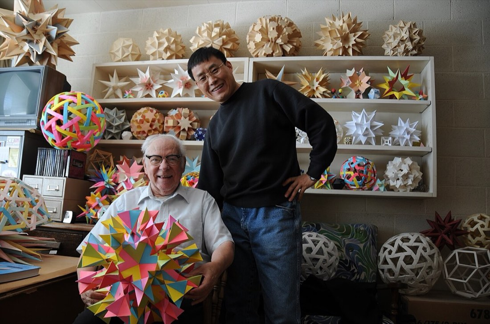
Star polyhedra as architecture
Surveyed by Tibor Tarnai, János Krähling and Sándor Kabai
A survey of finials, spire-tops and heraldic stars on real buildings found that a surprising number are genuine three-dimensional star polyhedra rather than flat stars pressed into service. Rome is full of them, because a star appears in several popes' arms — and the two below can be seen from the street, which most of them cannot.
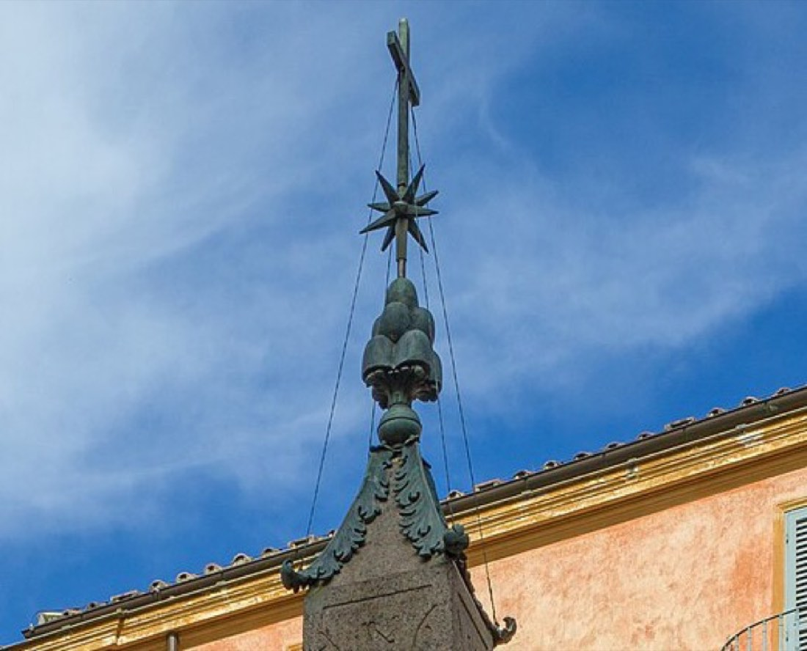
The most striking case is not readily visible from the ground. On the sacristy of St Peter's Basilica, built by Carlo Marchionni in 1776–84, the star crowning the dome for the arms of Pius VI is an almost exact great stellated dodecahedron — Kepler's 1619 solid, executed at architectural scale on a Vatican roof a century and a half later. It is not quite exact: two of the twenty pyramids are missing.
The idealized solid behind that roof ornament, built here from the dodecahedron: every shell is present. Compare the great stellated dodecahedron in the Kepler section. The actual finial omits two pyramids.
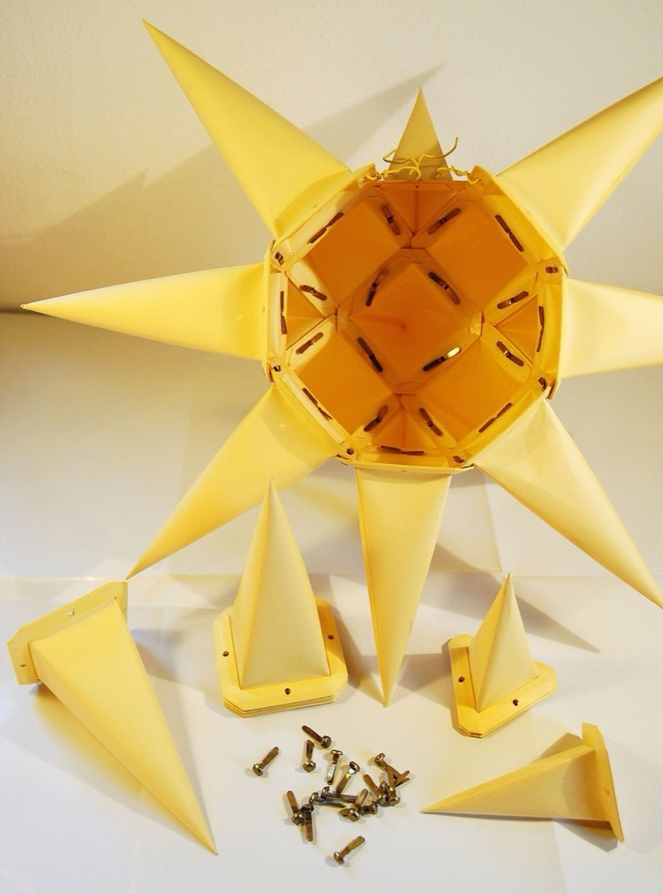
Five-fold symmetry turns up in metal
Dan Shechtman
This section is here because of a shape. The dodecahedral and icosahedral solids at the center of this page share icosahedral symmetry. Its five-fold axes — visible in a dodecahedron's pentagonal faces and the great icosahedron's twelve five-fold spikes — are exactly the kind of rotational symmetry that classical crystallography excluded from a periodically repeating lattice.
The crystallographic restriction allows only one-, two-, three-, four- and six-fold rotational axes in a periodic crystal lattice, so five-fold symmetry is excluded. The familiar facts that regular pentagons do not tile the plane and regular icosahedra do not fill space periodically illustrate the obstruction rather than proving it. On 8 April 1982, on sabbatical at the US National Bureau of Standards, Shechtman put a rapidly quenched aluminum–manganese alloy under an electron microscope and recorded a diffraction pattern with ten evenly spaced bright spots. His notebook entry for that sample reads, in effect, "10 fold" followed by three question marks. His own recollection of the moment, in Hebrew, is usually rendered as there is no such animal.
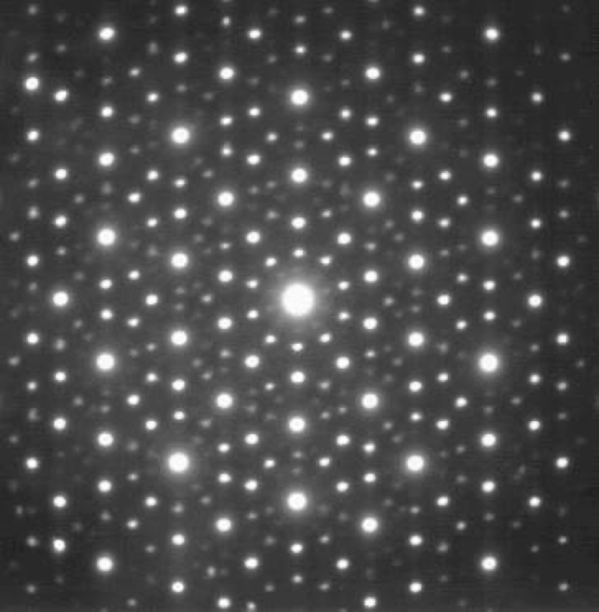
The symmetry in question. Turn the dodecahedron until a face points at you and the five-fold axis is the one running through it. Shechtman's alloy exhibited that rotational order in diffraction while lacking periodic translational order.
Icosahedra that build themselves
Caspar and Klug · Kroto, Heath, O'Brien, Curl and Smalley
Donald Caspar and Aaron Klug showed in 1962 how icosahedral symmetry lets viruses build large closed shells economically from many equivalent or quasi-equivalent protein subunits. Some capsids are visibly spiky. Adenovirus carries a trimeric fiber ending in a knob projecting from each of its twelve vertices, which under the electron microscope reads as an unmistakable star. The astroviruses are named from the Greek for star because the particles show a five- or six-pointed figure on the surface — although only about a tenth of them actually show it.
In 1985 Harold Kroto, James Heath, Sean O'Brien, Robert Curl and Richard Smalley reported C₆₀: sixty carbon atoms at the vertices of a truncated icosahedron, the shape of a football, and named it buckminsterfullerene after the architect of the geodesic dome. Kroto, Curl and Smalley shared the 1996 Nobel Prize in Chemistry for the discovery of fullerenes.
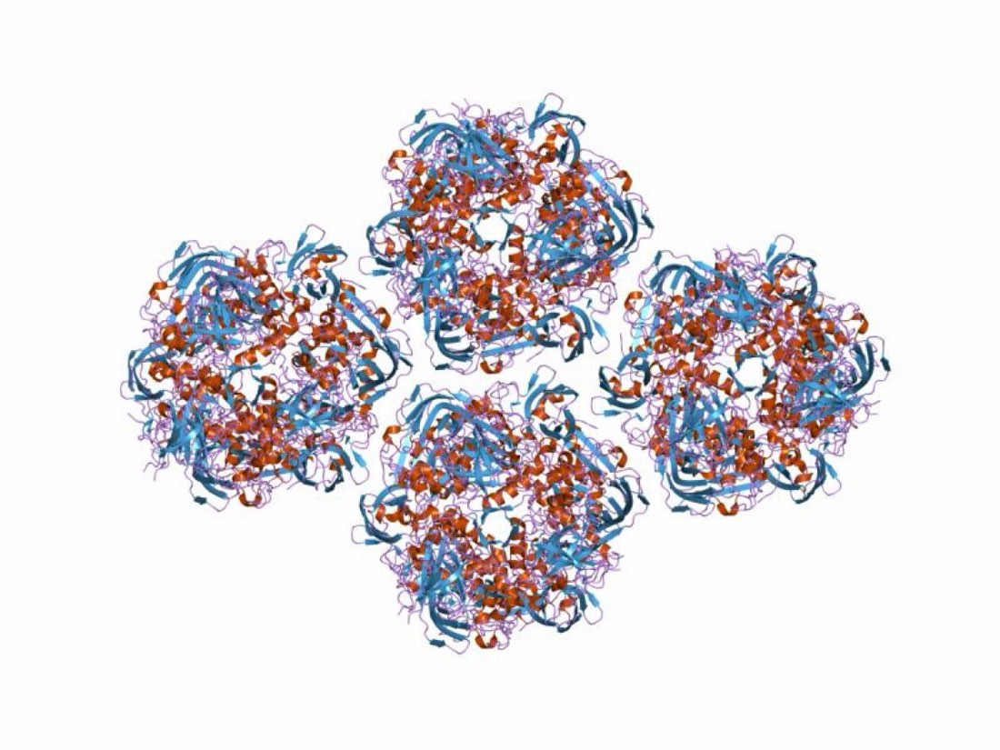
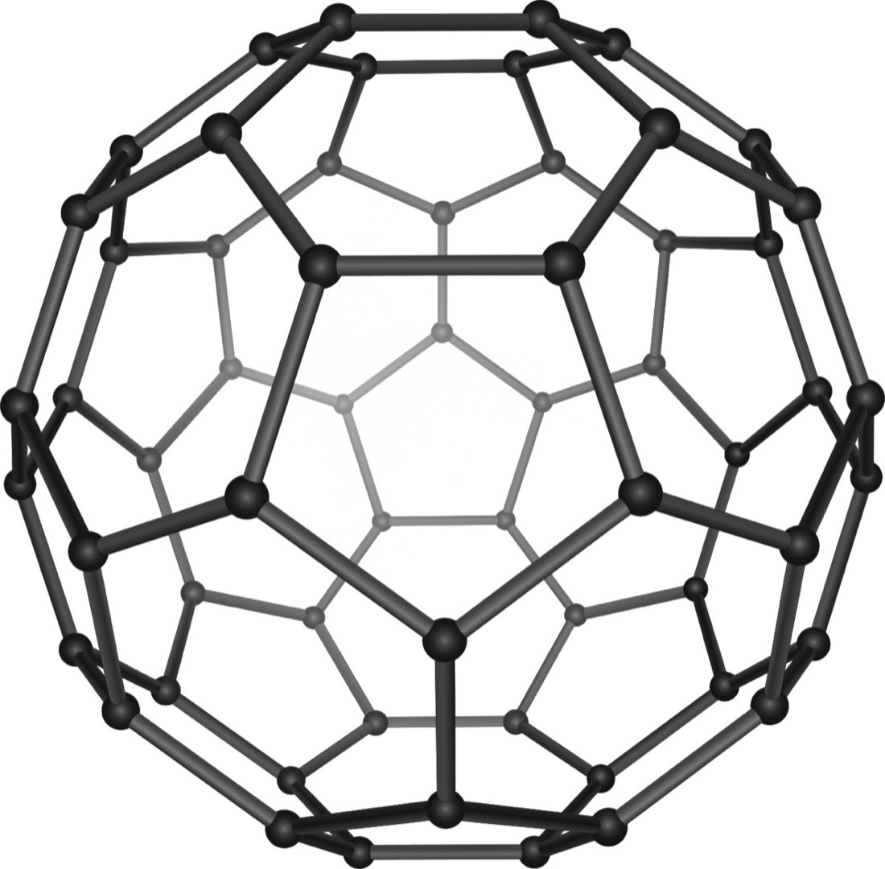
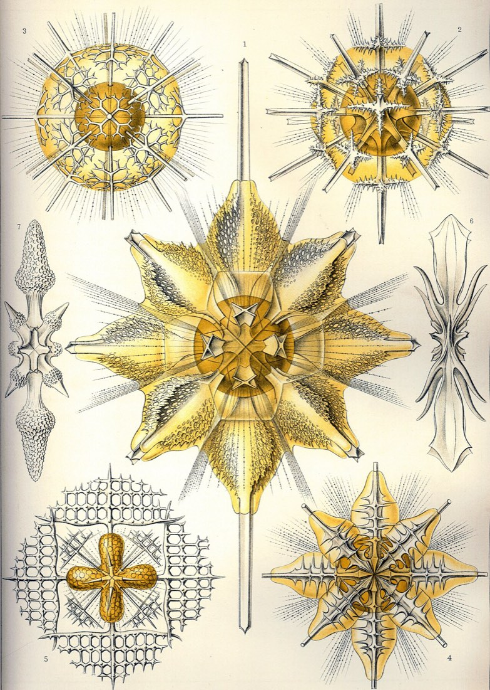
The truncated icosahedron — twelve pentagons, twenty hexagons, sixty vertices. It is the carbon skeleton of C₆₀ and the panelling of a football, and it shares icosahedral symmetry with the dodecahedral and icosahedral examples on this page.
The program you are using
Vladimir Bulatov
Bulatov's interactive stellation work was online by 1997–98; the Java applet documented in his 2001 paper followed in 2000–01. Its Cells window is Du Val's notation made clickable. A prior-art survey for this project found no other stellation program presenting the notation in quite that table-driven form.
This site is a JavaScript port of it, checked against the original: the same facet counts, the same cell structure, the same volumes to six decimal places. The original Java still compiles and runs decades later.
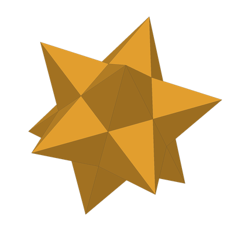
Small stellated dodecahedron Kepler, 1619 · the dodecahedron plus one shell open in the app →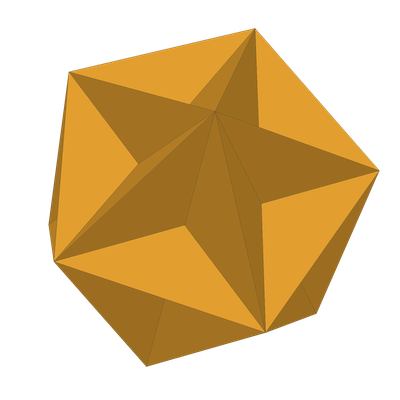
Great dodecahedron Poinsot, 1809 · two shells open in the app →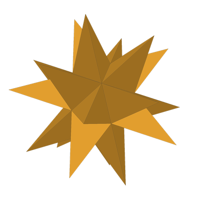
Great stellated dodecahedron Kepler, 1619 · three shells open in the app →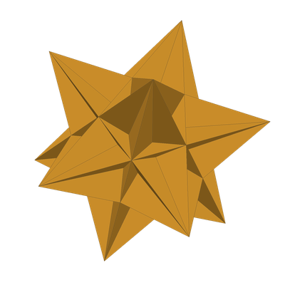
Great icosahedron Poinsot, 1809 · six shells beyond the icosahedron open in the app →These four are the Kepler–Poinsot solids, drawn here by the program itself. Each card opens the app with that solid already built, so the cell selection that makes it is there to be taken apart.
Sources and caveats
Dates, attributions and anecdotes here were checked claim by claim, and where the
sources disagree the text says so rather than picking a winner. The accompanying
fact-check and source ledger records the
evidence for every factual cluster, flags corrections and qualifications, and links
to primary or authoritative sources. It also preserves the unresolved question of
which Kepler text first used stella octangula. The mathematical research
notes used by this port remain in the repository under notes/research/.
Images. Most of the pictures on this page are out of copyright: the San Marco panel, Leonardo's drawings, Kepler's engravings, the Poinsot portrait, Hess's 1876 diagrams and Brückner's photographs are all public domain, and are credited individually beneath each figure. The Wheeler photograph is CC0 from the Smithsonian; the Wenninger, quasicrystal, Moravian-star, obelisk and buckminsterfullerene images are used under the Creative Commons licences named in their captions. The renders of the solids themselves — the four Kepler–Poinsot cards and the mainline A–H — were made by this program from its own meshes. The three Escher prints remain in copyright — they are © The M.C. Escher Company, Baarn, and are reproduced here at low resolution for commentary on the works themselves. The official source for Escher's work is mcescher.com.
Principal sources
- Max Brückner, Vielecke und Vielflache: Theorie und Geschichte, Teubner, 1900 — scanned in full at the University of Michigan, and at the Internet Archive. The modern account is George W. Hart, "Max Brückner's Wunderkammer of Paper Polyhedra", Bridges 2019; the plates are curated at the Public Domain Review. Frank Etwein, "Ein Leben für die Polyeder", Mathematische Semesterberichte 66 (2019), 15–30, is the one modern study devoted to him.
- H. S. M. Coxeter, P. Du Val, H. T. Flather, J. F. Petrie, The Fifty-Nine Icosahedra, University of Toronto Press, 1938; Springer 1982 (with Du Val's preface); Tarquin 1999 (Crennell).
- A. H. Wheeler, "Certain forms of the icosahedron and a method for deriving and designating higher polyhedra", Proc. ICM Toronto 1 (1924), 701–708. Biography and the break with Coxeter from David L. Roberts, Historia Mathematica 23 (1996), 269–287; models and catalog records from the Smithsonian National Museum of American History.
- Guy Inchbald, "Stellating and Facetting — a Brief History" and "In search of the lost icosahedra", Mathematical Gazette 86 (2002), 208–215.
- Rinus Roelofs, "Elevations and Stellations", Bridges 2014, and "A Mistake in a Drawing by Leonardo da Vinci" (2012); Dirk Huylebrouck, "De Divino Errore", arXiv:1311.2858.
- Magnus Wenninger, Polyhedron Models, Cambridge University Press, 1971.
- Tibor Tarnai, János Krähling and Sándor Kabai, "Star Polyhedra: From St Mark's Basilica in Venice to Hungarian Protestant Churches".
- For Kepler's circumstances: Ulinka Rublack, The Astronomer and the Witch (2015), and the Stanford Encyclopedia of Philosophy entry on Kepler. For Poinsot and Cauchy: the MacTutor biographies, and Inchbald's translation of Cauchy's "Recherches sur les polyèdres".
- For quasicrystals: NIST, "The Nobel Moment: Dan Shechtman"; Shechtman, Blech, Gratias and Cahn, Phys. Rev. Lett. 53 (1984), 1951–1953.